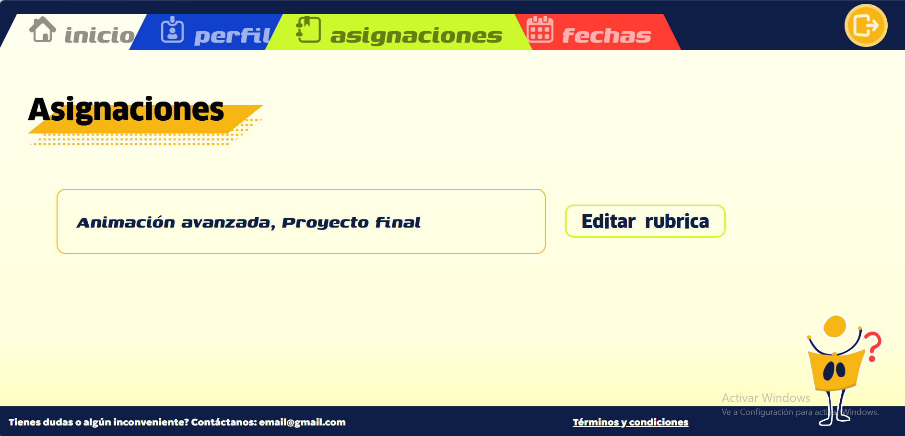

Manual de usuario
''

¡Hola!
¿Te perdiste y no sabes qué hacer?
Selecciona la página en la que te encuentras para obtener más informacion sobre qué es lo que puedes hacer.
Asignaciones
En esta sección como docente podrás administrar y gestionar los proyectos de tus materias:
- Proyectos por materia: Visualizarás tarjetas organizadas con el nombre de cada materia y el proyecto final correspondiente.
- Gestión de entregas: Haz clic sobre cualquier tarjeta de proyecto para revisar el avance de los alumnos, evaluar proyectos y asignar calificaciones.
- Navegación: Puedes alternar rápidamente con las demás áreas del panel utilizando la barra de pestañas superior.
